ONE MODEL, BEFORE AND AFTER BIOLOGY TRAINING
From CLIP to BioCLIP 2
BioCLIP 2 began as a general image–text model and was trained further on 214 million organism photos. It now names species twice as well. Both models have the same layout of 428 million weights, so each weight in one has a partner in the other and the two can be compared directly. Three questions follow: what did BioCLIP 2 get worse at, where in the network does it get worse, and can one model keep the naming without that loss?
45.5%
Starting model: species named correctly, given five example photos of each of 223 species
90.6%
The same test after BioCLIP 2’s training
THE TWO MODELS
The two models are two files of 427,616,513 numbers, laid out the same way
BioCLIP 2’s authors did not start from random weights. They loaded the LAION-2B CLIP ViT-L/14 weights and kept training them on organism photos. Nothing was added or removed, so each number in one file has a partner in the other.
Starting model
LAION-2B CLIP ViT-L/14
Trained on about 2.3 billion image–caption pairs from the web.
BioCLIP 2
The same network, trained further
214 million organism images with their taxonomic names, plus 26 million general web photos and captions mixed back in, so it would not forget everything else.
A mix
Any mix of the two
For every number, mix the two values: α parts BioCLIP 2 and 1 − α parts the starting model. α = 0 is the starting model and α = 1 is BioCLIP 2. Each mix is a working model.
Sources: LAION-2B CLIP model card; Gu et al. 2025, BioCLIP 2.
HOW THE MODEL READS A PHOTO AND A NAME
A photo and a name each become 768 numbers
The model scores a photo against a name by the cosine of the angle between their two lists of numbers (cosine similarity). A small angle means a match.
Photo, 224 × 224 pixels
Cut into 256 patches of 14 × 14 pixels.
257 tokens, 1,024 wide
One per patch, plus one summary token (often called the class token) for the whole photo.
24 image blocks
Each block lets tokens read each other (attention), then reworks each one separately (a small feed-forward network, MLP).
768 numbers
The summary token after a final reshaping to 768 numbers (the projection).
Name, up to 77 tokens
Looked up in the word table of 49,408 token vectors.
Tokens, 768 wide
One per word piece, with its position added.
12 text blocks
The same two steps as the image blocks.
768 numbers
The end-of-text token after the same kind of final reshaping.
Image side: 303,966,208 numbers. Text side: 123,650,304. One more number sets the scale of the scores. Together: 427,616,513.
THE FIRST-LAYER FILTERS, DRAWN AS PICTURES
Training on organism photos changed the first-layer filters by 20% and the text side’s word table by 88%
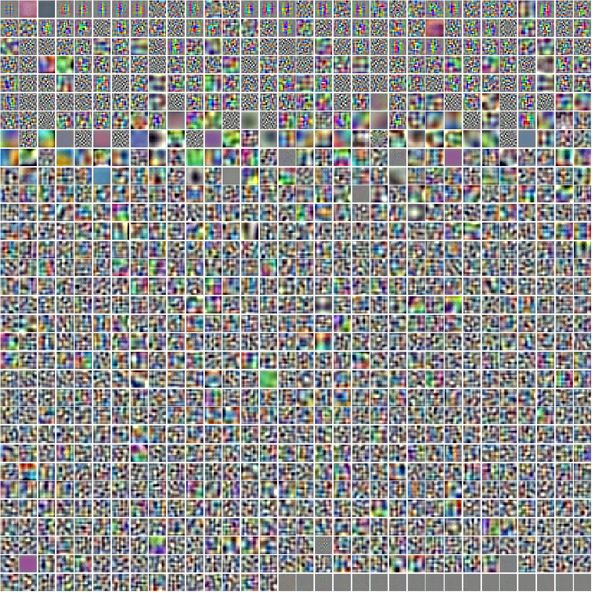
Starting model
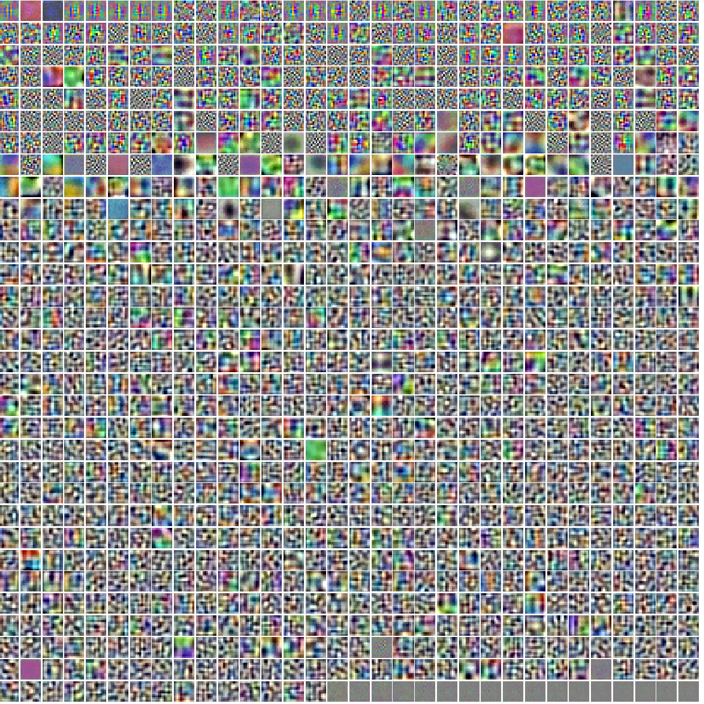
BioCLIP 2
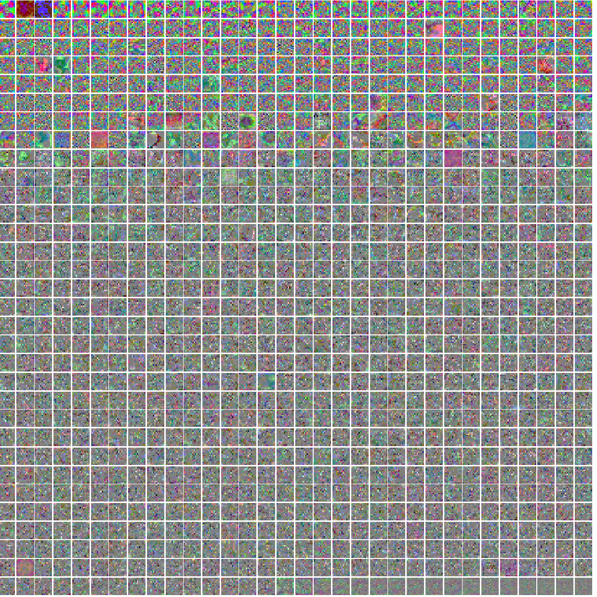
Difference, shown 4× brighter
Each tile is one 14 × 14 pixel filter that reads a patch of the photo. Tiles are ordered by how much they changed. Training changed these filters by 20% of their original size.
ONE PHOTO SCORED AGAINST SPECIES NAMES
BioCLIP 2 scores a junco photo’s right name 0.717, up from 0.291, and its four highest wrong names higher too
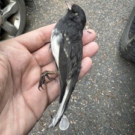
Dark-eyed Junco (Junco hyemalis), as the model sees it: 224 × 224 pixels. Photo (c) jessicaturtle, CC BY-NC, cropped.
Starting model
0.291
Junco hyemalis
0.248
Zootoca vivipara
0.232
Phoca vitulina
0.229
Grallina cyanoleuca
0.218
Coccyzus americanus
The right name scores highest, by a small margin. A lizard and a seal come next.
Halfway mix
0.499
Junco hyemalis
0.322
Grallina cyanoleuca
0.261
Zootoca vivipara
0.247
Coccyzus americanus
0.232
Phoca vitulina
The right name’s lead widens. A bird moves into second place.
BioCLIP 2
0.717
Junco hyemalis
0.592
Coccyzus americanus
0.562
Branta canadensis
0.560
Grallina cyanoleuca
0.558
Nycticorax nycticorax
All five top names are now birds.
Scores are the cosine of the angle between photo and name (1 is a perfect match). The halfway mix averages every weight of the two models. The nine other names were drawn at random from the 223 species.
WHAT TRAINING IMPROVED
BioCLIP 2 names 90.6% of photos of 223 species correctly, up from the starting model’s 45.5%
40%
60%
80%
100%
0
0.25
0.5
0.75
1
Start
BioCLIP 2
+45 points
Give the model five example photos of each species, then ask it to name new photos. BioCLIP 2 gets 9 in 10 right.
Each model expects pixel values adjusted in its own way (input scaling). The 45.5% and 90.6% give each model its own. The curve uses BioCLIP 2’s for every mix, so the starting model scores 43.2% on it.
Horizontal axis: BioCLIP 2’s share of every weight, from 0, the starting model (Start), to 1, BioCLIP 2. iNaturalist photos, 223 species. Each mix names more photos correctly than the one before it.
QUESTION 1
What did BioCLIP 2 get worse at?
A natural guess: only subjects far from biology. Training on organism photos made BioCLIP 2 better at naming species, and it should be no worse at any other question about animals.
Check 1: a question about animals that BioCLIP 2 was not trained on
Is the animal in the photo alive or dead? BioCLIP 2 was trained to match photos to taxonomic names, so its training did not target this.
Check 2: a subject outside biology
Ten kinds of vehicle, from bicycle to rocket, named from words and from example photos.
Check 3: which photos each model treats as alike
Pick one photo and ask each model which other photos it rates as most similar.
QUESTION 1 · ALIVE OR DEAD
BioCLIP 2 scores 85.7% at telling alive animals from dead ones; the starting model scores 92.1%
80%
85%
90%
95%
100%
0
0.25
0.5
0.75
1
Species the classifier was trained on
Species held out from the classifier
92.1% → 85.7%
Balanced accuracy (the average of accuracy on alive photos and on dead ones), worked out for each of 115 held-out species and then averaged: starting model, then BioCLIP 2.
A simple classifier reads “alive” or “dead” from the model’s 768 numbers. For species it was trained on, the score stays near 91%. The score falls only for species it was not trained on.
Horizontal axis: BioCLIP 2’s share of every weight, from 0, the starting model, to 1, BioCLIP 2. 95% interval on the change: −9.5 to −3.4 points. Every mix is given BioCLIP 2’s adjustment of pixel values, so the starting model scores 91.4% here.
QUESTION 1 · PHOTO BY PHOTO
159 photos are labelled alive or dead correctly by the starting model alone, and 59 by BioCLIP 2 alone
All 1,323 test photos, by which model’s classifier labels them correctly
1,063 both right
159
59
42
656 photos recorded as alive
539 both right
78
20
19
667 photos recorded as dead
524 both right
81
39
23
Both classifiers right
Only the starting model right
Only BioCLIP 2 right
Both wrong
The 159 photos only the starting model gets right split evenly: 78 alive animals and 81 dead ones. Of the 59 only BioCLIP 2 gets right, 39 are dead animals and 20 alive. Counting every photo equally, the starting model is right on 92.4% and BioCLIP 2 on 84.8%; counting each of the 115 species equally gives 92.1% and 85.7%.
Right means the classifier agrees with the alive-or-dead label recorded by the iNaturalist contributor. 115 species, each tested by a classifier trained without that species.
QUESTION 1 · PHOTOS BIOCLIP 2 GETS WRONG
Eight photos the starting model labels correctly as alive or dead and BioCLIP 2 labels wrongly
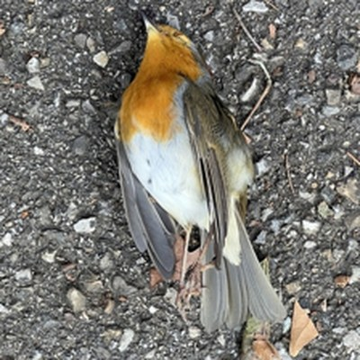
Dead
European Robin
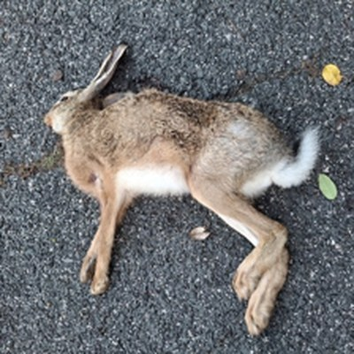
Dead
Brown Hare
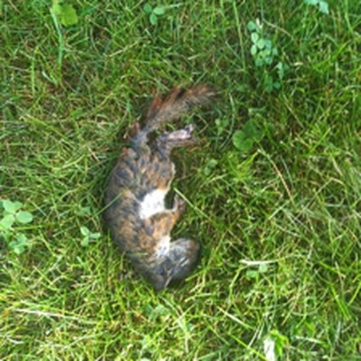
Dead
American Red Squirrel
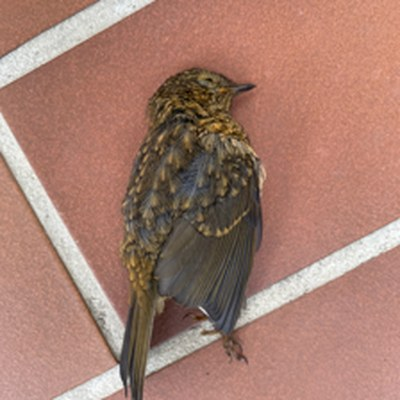
Dead
European Robin
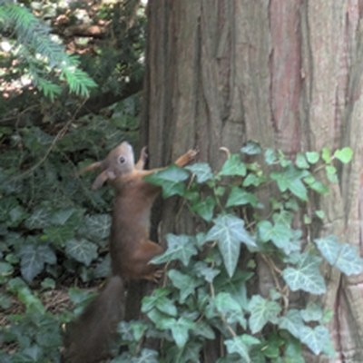
Alive
Eurasian Red Squirrel
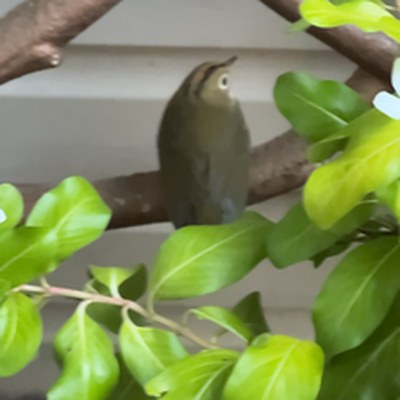
Alive
Ovenbird
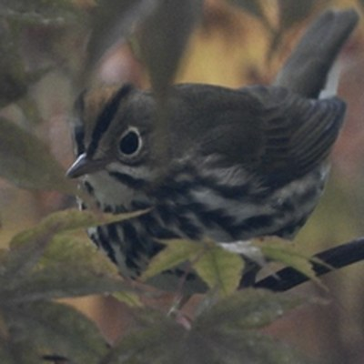
Alive
Ovenbird
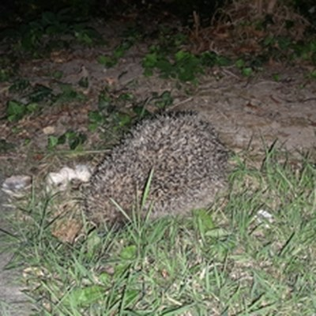
Alive
Common Hedgehog
Top row. A dead robin on its back on tarmac, a dead hare on tarmac, a dead red squirrel on a lawn and a dead young robin on paving tiles. BioCLIP 2’s classifier calls all four alive.
Bottom row. A live red squirrel on a tree trunk, two live ovenbirds among leaves and a live hedgehog on grass at night. It calls all four dead.
The starting model’s classifier gets all eight right.
Eight of the 159 photos only the starting model gets right: the largest disagreements between the two classifiers among photos with a display licence. The word under each photo is the status its contributor recorded. iNaturalist photos, cropped; credits on the last slide.
QUESTION 1 · PHOTOS THE STARTING MODEL GETS WRONG
Eight photos BioCLIP 2 labels correctly as alive or dead and the starting model labels wrongly
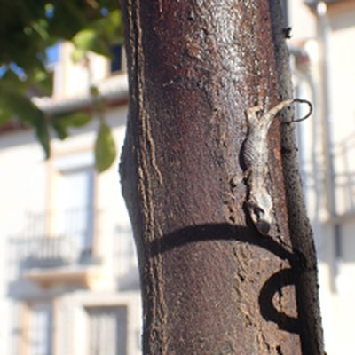
Dead
Moorish Gecko
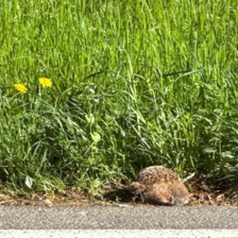
Dead
Common Hedgehog
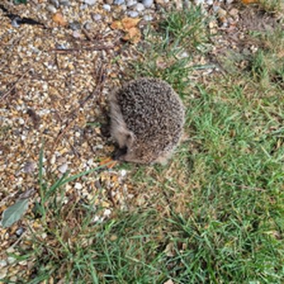
Dead
Common Hedgehog
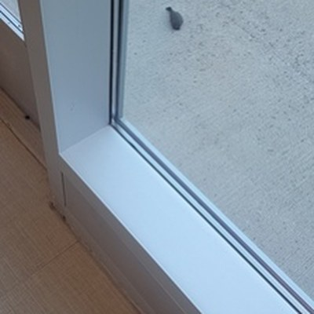
Dead
Dark-eyed Junco
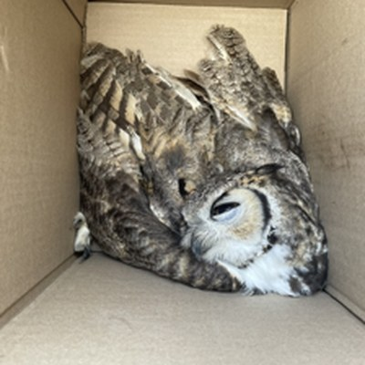
Dead
Great Horned Owl
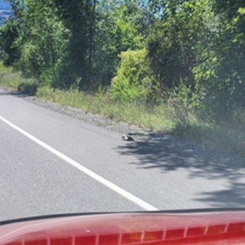
Dead
Striped Skunk
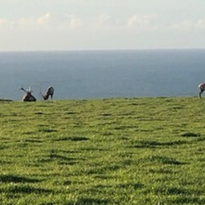
Alive
Wapiti
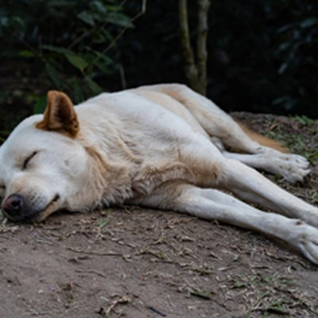
Alive
Domestic Dog
Top row. A dead gecko on a tree trunk, a dead hedgehog beside long grass, a dead hedgehog on gravel and a dead junco on a window ledge.
Bottom row. A dead owl in a cardboard box, a dead skunk on a road, live wapiti on a clifftop and a live dog asleep on the ground.
The starting model’s classifier calls the six dead animals alive and the two live ones dead. BioCLIP 2’s classifier gets all eight right.
Eight of the 59 photos only BioCLIP 2 gets right: the largest disagreements between the two classifiers among photos with a display licence. The word under each photo is the status its contributor recorded. iNaturalist photos, cropped; credits on the last slide.
QUESTION 1 · NAMING VEHICLES
Given ten vehicle names to choose from, BioCLIP 2 calls 83% of motorcycle photos “rocket”
Starting model
BioCLIP 2
its most common wrong name
Rocket
99%
100%
Streetcar
68%
96%
rocket 3%
Tank
98%
83%
rocket 14%
Bicycle
96%
71%
rocket 22%
Tractor
95%
29%
tank 48%
Bus
88%
24%
streetcar 50%
Pickup truck
97%
21%
streetcar 32%
Lawn mower
98%
14%
rocket 52%
Train
92%
12%
streetcar 38%
Motorcycle
99%
8%
rocket 83%
93.0% → 45.8%
Vehicle photos named correctly from words, starting model then BioCLIP 2. The model compares each photo with ten phrases such as “a photo of a bus” and picks the closest.
91.5% → 86.7%
The same photos named with no words involved: the model is given five example photos of each vehicle. The score falls 4.8 points.
Violet and teal bars: the share of each vehicle’s 100 test photos that each model names correctly from words. Copper bars: the share BioCLIP 2 gives its most common wrong name. Ten vehicle classes from a standard set of small labelled photos (CIFAR-100), enlarged to 224 pixels.
QUESTION 1 · THE VEHICLE NAMES COMPARED WITH EACH OTHER
In BioCLIP 2 the ten vehicle names are less similar to each other: 0.662 on average, down from 0.774
Starting model · average 0.774
BioCLIP 2 · average 0.662
Bicycle
Bus
Lawn mower
Motorcycle
Pickup truck
Rocket
Streetcar
Tank
Tractor
Train
Outlined: “bus” with “streetcar”, 0.863
The same pair, 0.741
Each cell compares two vehicle names by cosine similarity, where 1 means the model treats the two names as identical. Darker is more alike.
A natural guess: the text side forgot these words, so it now gives “bus” and “streetcar” almost the same numbers.
The grids show the opposite. In BioCLIP 2 almost every cell is lighter. “Bus” and “streetcar” are still each other’s closest name, at 0.741, down from 0.863.
Columns follow the same order as the rows. The grey diagonal is each name with itself. Colour runs from white at a similarity of 0.5 to full copper at 0.95. Names were given as “a photo of a bus” and so on.
QUESTION 1 · BUS PHOTOS SCORED AGAINST FOUR NAMES
On bus photos BioCLIP 2 scores the name “streetcar” 0.566, above “bus” at 0.555
0
0.2
0.4
0.6
Starting model
“bus”
0.250
“streetcar”
0.187
“rocket”
0.145
“tank”
0.131
BioCLIP 2
“bus”
0.555
“streetcar”
0.566
“rocket”
0.540
“tank”
0.546
In the starting model a bus photo scores 0.250 against “bus” and 0.187 against “streetcar”, so it answers “bus”.
In BioCLIP 2 each of the four names measured scores higher on every one of the 1,000 vehicle photos. The right name rose least.
On a bus photo all four now score between 0.540 and 0.566, with “streetcar” highest.
The junco photo showed the same overall rise: its right name went from 0.291 to 0.717 and its highest wrong names rose too.
Bars: average cosine similarity between the 100 bus photos and each name. The model answers with the highest-scoring name.
QUESTION 1 · WHAT EACH MODEL TREATS AS ALIKE
Of the 8 photos each model rates most like a robin photo, BioCLIP 2 picks 7 robins and the starting model 1
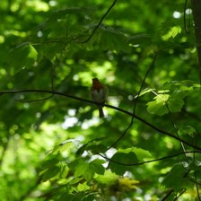
The photo we ask about: a European Robin, small and far away, which the starting model usually misnames.
Starting model · 1 of 8 is a robin
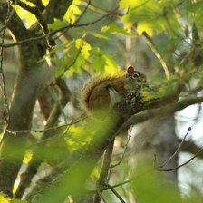
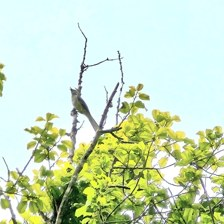
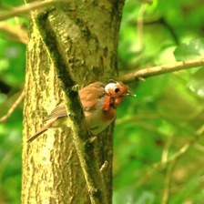
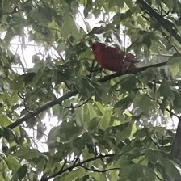
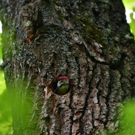
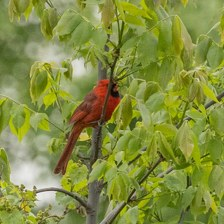
Weights mixed, 0.75 BioCLIP 2 · 6 of 8 are robins
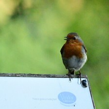
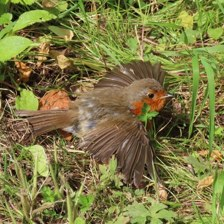
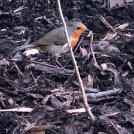
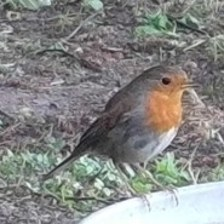
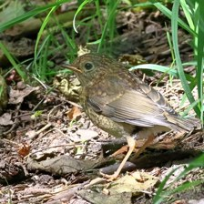
BioCLIP 2 · 7 of 8 are robins
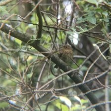
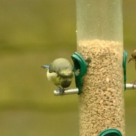
Most similar first, from other photographers only. iNaturalist photos, CC BY and CC BY-NC, cropped; credits on the last slide.
QUESTION 1 · WHAT EACH MODEL TREATS AS ALIKE
The 8 photos the starting model rates most like a dead moose are all dead animals; BioCLIP 2’s are mostly kangaroos
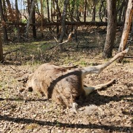
The photo we ask about: a Moose, dead.
Starting model · 8 of 8 are dead animals, none is a moose
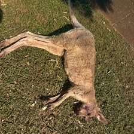
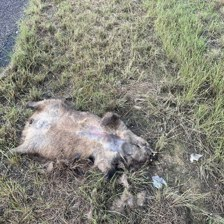
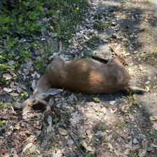
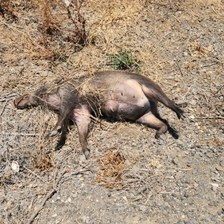
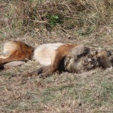
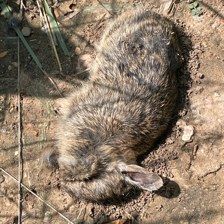
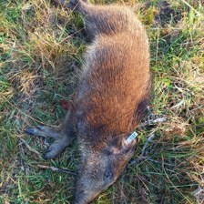
Weights mixed, 0.75 BioCLIP 2 · 4 of 8 are dead, 1 is a moose
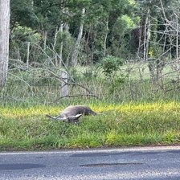
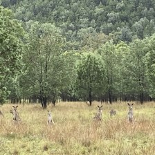
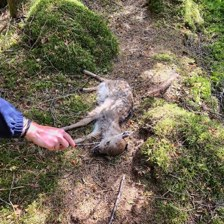
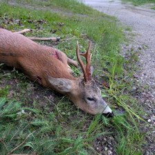
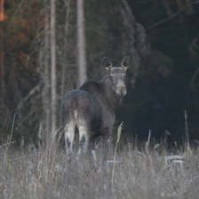
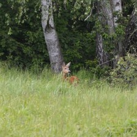
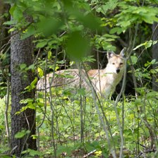
BioCLIP 2 · 5 kangaroos, 2 moose and a wombat; 3 of the 8 are dead
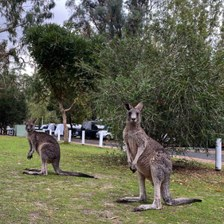
Most similar first, from other photographers only. iNaturalist photos, CC BY and CC BY-NC, cropped; credits on the last slide.
QUESTION 1 · EACH PHOTO’S MOST SIMILAR PHOTOS
In BioCLIP 2, 59% of a photo’s most similar photos share its alive-or-dead label, down from 81%
0%
25%
50%
75%
100%
0
0.25
0.5
0.75
1
Share with the same alive-or-dead label
Share of the same species
Chance, 50%
81% → 59%
For each photo, take the eight photos a model rates most similar. In the starting model, 81% share its alive-or-dead label. In BioCLIP 2, 59% do, nine points above chance.
The share of the same species rises from 24% to 79%. A classifier still tells alive from dead from BioCLIP 2’s 768 numbers (85.7%), but photos with the same label are now only slightly more likely to be rated similar.
Horizontal axis: BioCLIP 2’s share of every weight (0 is the starting model). All 1,323 alive-or-dead test photos, similar photos by other photographers only.
QUESTION 1 · MIXING THE TWO MODELS’ WEIGHTS
Averaging the two models’ weights gives 72.7% on species naming and 92.2% at telling alive from dead
40%
60%
80%
100%
0
0.25
0.5
0.75
1
Alive or dead, unseen species
Species naming
92.2%
72.7%
90.6%
85.7%
43.2%
91.4%
72.7%
Species naming at a mix of 0.5, where every weight is the average of the two models’ values. That is 62% of the way from 43.2% to 90.6%.
92.2%
Telling alive from dead at the same mix; the starting model scores 91.4%. Past 0.5 it falls: 90.1% at 0.75, 86.3% at 0.9.
Naming vehicles from words is 92.8% correct at this mix.
Horizontal axis: BioCLIP 2’s share of every weight (0 is the starting model). 223 species; 1,323 photos of 115 held-out species.
QUESTION 1 · ANSWER
BioCLIP 2 got worse at telling alive from dead and at naming vehicles from words, which fell from 93.0% to 45.8%
Species naming rose from 45.5% to 90.6%. With every weight averaged between the two models, naming is 72.7% and telling alive from dead is no worse than in the starting model.
Worse at one question about animals
Accuracy at telling alive animals from dead ones fell from 92.1% to 85.7% in species the classifier had not seen. On 159 photos only the starting model is right, among them a robin on its back on tarmac.
Worse at matching vehicle photos to words
Vehicle photos named correctly from words fell from 93.0% to 45.8%. Named from example photos they fall 4.8 points, to 86.7%. On bus photos BioCLIP 2 scores “streetcar” above “bus”.
Similar photos are now mostly the same species
A photo’s most similar photos are the same species 79% of the time, up from 24%. They share its alive-or-dead label 59% of the time, down from 81%.
QUESTION 2
Where in the network does BioCLIP 2 get worse at telling alive from dead?
A natural guess: a little in every block. Training changed the weights of all 24 image blocks, so BioCLIP 2 should fall a little further behind the starting model at each block, from the first to the last.
Read each block
Stop the model after a block, take the tokens it holds there, and test them the same way as the final output.
Watch the attention
See which patches of the photo the summary token, the one token that becomes the output, draws on in the last blocks.
Look at the weights
Subtract the starting model’s weights from BioCLIP 2’s, block by block, and see whether any block’s change stands out.
QUESTION 2 · WHAT A BLOCK HOLDS
Every block holds 257 tokens: 256 patch tokens and 1 summary token
256 patch tokens, one per patch
1 summary token
reads from the patch tokens in every block
final steps
768 numbers
not passed on after block 24
A token is a list of 1,024 numbers. Each patch token describes one 14 × 14 pixel patch of the photo. The summary token describes no patch of its own. In every block it reads from the patch tokens through attention.
After block 24 only the summary token goes on, through two final steps: a rescaling step and a final projection. They turn it into the model’s 768 output numbers.
So any block can be read two ways: from its summary token, or from the average of its 256 patch tokens.
The image side cuts a 224 × 224 pixel photo into a 16 by 16 grid of patches, 256 in all. The summary token is often called the class token.
QUESTION 2 · SPECIES NAMING, BLOCK BY BLOCK
Up to block 16, neither model can name 1 species photo in 10 from its summary token
0%
25%
50%
75%
100%
2
6
10
14
18
22
24
BioCLIP 2
Start
14% → 91%
BioCLIP 2’s species naming read from its summary token at block 18 and at block 24. The starting model goes from 5% to 43% over the same blocks.
Up to block 16 neither model names 1 photo in 10 from its summary token.
Horizontal axis: image block, 2 to 24. Each point is read afresh from that block’s summary token, the token that becomes the output. Start is the starting model. These scores come from a separate run of the naming test, so the block-24 values differ from other slides by under a point.
QUESTION 2 · ALIVE OR DEAD, BLOCK BY BLOCK
Through block 22, BioCLIP 2’s summary token scores higher than the starting model’s at telling alive from dead
84%
86%
88%
90%
92%
94%
18
19
20
21
22
23
24
norm
output
BioCLIP 2, summary token
Starting model, summary token
91.9%
90.5%
91.9%
Accuracy at telling alive from dead when a classifier reads BioCLIP 2’s summary token at block 22, against 90.5% for the starting model. BioCLIP 2 is ahead at every block measured, from block 2 to block 22.
If the loss were gradual, BioCLIP 2 would fall further behind at each block. After 22 blocks it is ahead. Its final output scores 85.7%, so all of the fall happens after block 22.
Horizontal axis: image block, then the two final steps, rescaling (norm) and projection (output). Each point: a fresh alive-or-dead classifier trained on that block’s summary token and tested on 1,323 photos of 115 species held out from it.
QUESTION 2 · BLOCK 22 TO BLOCK 23
Between blocks 22 and 23, BioCLIP 2’s summary token becomes 4.2 points worse at telling alive from dead
84%
88%
92%
0%
50%
100%
18
19
20
21
22
23
24
norm
output
Alive or dead, from the summary token
Species naming, from the same token
91.9%
87.7%
71.9%
87.3%
Starting model
BioCLIP 2
Starting model
BioCLIP 2
−4.2 points
BioCLIP 2’s summary token at telling alive from dead: 91.85% at block 22, 87.65% at block 23 (95% interval −6.38 to −2.33). That is 4.2 of the 6.2 points lost between block 22 and the output. Another 1.7 is lost at the final projection.
71.9% → 87.3%
Species naming from the same token at the same step. It rose more one block earlier, from 42.5% to 71.9%, while the alive-or-dead score moved from 93.0% to 91.9%.
Horizontal axis: image block 18 to 24, then the two final steps, rescaling (norm) and projection (output). Shaded: the step from block 22 to block 23. Over that step the starting model changes by +0.15 points at telling alive from dead and its species naming rises 15 points.
QUESTION 2 · THE PATCH TOKENS
BioCLIP 2’s patch tokens still tell alive from dead at block 24: 91.0%, against 87.0% from its summary token
84%
86%
88%
90%
92%
94%
18
19
20
21
22
23
24
norm
output
BioCLIP 2, summary token
BioCLIP 2, patch tokens
Starting model, summary token
Starting model, patch tokens
Patch tokens: 91.2% at block 23, 91.0% at block 24
Summary token: 87.7%, 87.0%
91.0%
Accuracy at telling alive from dead read from the average of BioCLIP 2’s 256 patch tokens at block 24.
After block 23 BioCLIP 2 still holds what is needed to tell alive from dead. The summary token, the one token that becomes the output, carries less of it.
Solid lines: summary token. Dotted lines: average of the 256 patch tokens, one per patch of the photo. The same 1,323 photos and kind of classifier for all four lines. After block 24 come the final rescaling (norm) and projection (output).
QUESTION 2 · WHICH PATCHES THE SUMMARY TOKEN DRAWS ON
On this junco photo, BioCLIP 2’s summary token at block 24 takes 89.6% of its attention from a quarter of the patches
Dark-eyed Junco. Photo (c) jessicaturtle, CC BY-NC, cropped.
Block 22
Block 23
Block 24
73.4%
89.6%
Starting model
BioCLIP 2
Each tile shows how much the summary token draws on each of the 256 patches at that block. Palest is none, copper is most.
The percentage under block 24 is the share of attention on the 64 patches that model attends to most; the starting model’s takes 73.4%. Only 28 of those 64 are the same in both models, and BioCLIP 2 puts 46.6% of its attention on the starting model’s 64.
Both models draw most on the bird’s head and shoulders. On all eight photos checked, BioCLIP 2’s top 64 patches take a larger share than the starting model’s top 64.
Each tile averages the block’s parallel attention steps (heads) and leaves out the attention the summary token pays to itself. All six tiles share one colour scale.
QUESTION 2 · THE WEIGHT CHANGE AS A PICTURE
57.7% of block 1’s weight change falls where the starting model’s strongest patterns meet; in block 24, 9.04%
Block 1
Block 24
57.7% of the change is inside the outlined corner
9.04% is inside the same corner
Each picture is one block’s attention query weights in BioCLIP 2 minus the same weights in the starting model. These weights set what each token looks for. White is no change.
Any table of weights can be split into ranked pairs of an input pattern and an output pattern, called directions. Columns are the starting model’s input patterns, rows its output patterns, strongest first.
The outlined corner, where the strongest patterns meet, is a sixteenth of the picture, so a change spread evenly would put 6.25% there. Block 1’s change puts 57.7% there. Block 24’s puts 9.04% there and shows a faint diagonal: a slightly larger change where an input pattern meets its own output pattern.
Each picture is 256 × 256 cells; a cell averages the size of the change over 4 × 4 of the starting model’s directions. Both pictures share one colour scale. Percentages are shares of the squared change.
QUESTION 2 · WEIGHT CHANGE, ALL 24 BLOCKS
Block 23’s weight change needs 514 directions to hold 90% of it, close to the 523 of a random change
0
200
400
600
1
7
12
18
24
Random change: 523
Teal bars: blocks 1 to 7
141 of 1,024
Directions (pairs of an input and an output pattern) needed to hold 90% of the change to block 1’s attention query weights. A small, targeted edit needs few. A random change of the same size needs 523.
From block 8 on the count is 481 to 515, close to a random change. Blocks 23 and 24 need 514 and 506, like every other late block.
Horizontal axis: image block, 1 to 24. Bars: directions needed for 90% of the squared change to the attention query weights, which set what each token looks for. On the text side every block needs 376 to 387 directions, against 391 or 392 for a random change.
QUESTION 2 · ANSWER
Two-thirds of BioCLIP 2’s fall at telling alive from dead happens at block 23, in its summary token
On all eight photos checked, BioCLIP 2’s summary token at block 24 takes a larger share of its attention from its 64 most-attended patches: 89.6% against 73.4% on the junco photo.
Late in the network, and mostly in one step
The loss does not build up block by block. Through block 22, BioCLIP 2 tells alive from dead better than the starting model at every block measured. Between blocks 22 and 23 its summary token falls 4.2 points, of the 6.2 it loses between block 22 and the output.
Only in the summary token
At block 24 the average of the patch tokens scores 91.0% and the summary token 87.0%. BioCLIP 2 still holds the information. The token that becomes the output carries less of it.
Block 23’s weights changed like any late block’s
Nothing in the weights marks block 23 out. The fall appears only when each block’s tokens are tested.
QUESTION 3
Can one model name species like BioCLIP 2 and tell alive from dead like the starting model?
A natural guess: only by training BioCLIP 2 again with telling alive from dead added as a goal, because the same weights produce both scores.
Swap blocks
Both models have the same 24 image blocks in the same layout. Copy some blocks from one model into the other and test the result.
Mix weights
Average every weight of the two models and test the result.
Read a different token
Leave BioCLIP 2 untouched and test its patch tokens in place of its summary token.
QUESTION 3 · SWAPPING BLOCKS
The starting model with BioCLIP 2’s last 12 blocks copied in names 76.6% of species photos, up from 43%
40%
60%
80%
100%
0
last 6
last 12
last 18
all 24
Alive or dead, species the classifier never saw
Species naming
43% → 77%
Species naming when the starting model keeps its first 12 image blocks and takes BioCLIP 2’s last 12. No one trained this combination. That is 33 of the 47 points between the two models.
Accuracy at telling alive from dead falls as naming rises. With BioCLIP 2’s last 6 blocks the starting model loses 1.8 points. With the last 18 it scores 84.2%, below BioCLIP 2’s 85.7%.
Horizontal axis: image blocks taken from BioCLIP 2, counted from the output end. 223 species; 1,323 photos of 115 species.
QUESTION 3 · BIOCLIP 2 WITH STARTING-MODEL BLOCKS
BioCLIP 2 with the starting model’s last 12 blocks copied in scores 92.9% at telling alive from dead
84%
86%
88%
90%
92%
94%
Alive or dead, unseen species
91.4%
Start
85.7%
BioCLIP 2
92.9%
Hybrid
0%
25%
50%
75%
100%
Species naming
43.2%
Start
90.6%
BioCLIP 2
52.3%
Hybrid
The hybrid, which no one trained: BioCLIP 2’s image blocks 1 to 12 in teal, then the starting model’s blocks 13 to 24 in violet.
It scores 92.9% at telling alive from dead, where the starting model (Start) scores 91.4% and BioCLIP 2 85.7%.
It names 52.3% of species, against the starting model’s 43.2% and BioCLIP 2’s 90.6%. Both scores are closer to those of the model that supplies blocks 13 to 24.
The hybrid keeps BioCLIP 2’s patch filters, text side and the steps after block 24. 223 species; 1,323 photos of 115 species.
QUESTION 3 · SWAPPING BLOCKS 23 AND 24
BioCLIP 2 tells alive from dead 4.1 points better with the starting model’s blocks 23 and 24 swapped in
Image blocks 1 to 24, then the final steps
Naming
Alive or dead
BioCLIP 2
90.63%
85.68%
with the starting model’s blocks 23 and 24
87.42% −3.21
89.74% +4.06
with the starting model’s block 24 only
89.45% −1.18
88.56% +2.88
with the starting model’s final steps only
91.04%
86.03%
with the starting model’s blocks 23, 24, final steps
87.22%
90.51%
Starting model with BioCLIP 2’s blocks 23 and 24
40.60%
89.79% −1.62
Teal cells are BioCLIP 2’s, violet cells the starting model’s. With blocks 23 and 24 replaced, the alive-or-dead score rises to 89.74% (95% interval on the change +1.66 to +6.38) and naming falls 3.21 points. In the last row the starting model loses 1.6 points, less than the 4.2 BioCLIP 2 loses at its own block 23.
Final steps: rescaling and projection. Naming: 223 species. Alive or dead: 1,323 photos of 115 held-out species.
QUESTION 3 · READING THE PATCH TOKENS
Read from its patch tokens, an unchanged BioCLIP 2 tells alive from dead with 89.6% accuracy, up from 85.7%
1 summary token
256 patch tokens, averaged
final steps
final steps
85.7%
89.6%
Alive or dead, unseen species
Both routes use the same photos, weights and final steps and differ only in the token read.
89.6%
Accuracy at telling alive from dead when a classifier reads the average of BioCLIP 2’s block-24 patch tokens, passed through BioCLIP 2’s own final steps. That is 3.9 points above the summary token (95% interval 1.6 to 6.2).
The summary token still names 90.6% of species photos. One run of an unchanged BioCLIP 2 produces both results.
Final steps: rescaling and projection. Read straight after block 24, before the final steps, the same patch tokens score 91.0%.
QUESTION 3 · ALL THE VARIANTS COMPARED
Reading the patch tokens makes BioCLIP 2 better at telling alive from dead without lowering its naming
84%
86%
88%
90%
92%
94%
40%
60%
80%
100%
Alive or dead ↑
Species naming →
Start
BioCLIP 2 with Start’s blocks 13 to 24
Mix 0.5
Mix 0.75
blocks 23, 24, final steps
patch tokens read, no weight changed
blocks 23 and 24
block 24
final steps
BioCLIP 2
Start with BioCLIP 2’s blocks 13 to 24
Right is better naming, up is better at telling alive from dead. The grey line is the weight mix from the starting model (Start) to BioCLIP 2. Dark points are block swaps between the two models; the hollow point swaps only the final steps.
Every weight change that raises the alive-or-dead score by more than a point lowers naming. Swapping blocks 23 and 24 gives 87.4% naming and 89.7% alive or dead; the 0.75 mix, 86.6% and 90.1%.
The teal diamond changes no weight. Patch tokens give 89.6% on alive or dead; the summary token still names 90.6%.
Final steps: rescaling and projection. 223 species; 1,323 photos of 115 held-out species. Unlabelled grey dots are mixes of 0.1, 0.25 and 0.9. The diamond pairs naming from the summary token with the alive-or-dead score from the patch tokens of the same unchanged model.
LOOKING BACK · THE WHOLE MODEL
Six measurements placed on the model, from block 1 to where photos meet names
Block 1. The weight change is concentrated: 141 directions (pairs of an input and an output pattern) of 1,024 hold 90% of it.
Block 23. In this one step BioCLIP 2’s summary token becomes 4.2 points worse at telling alive animals from dead ones. The patch tokens still score 91%.
Photo
→
256 patch tokens and 1 summary token
→
→
Rescaling and projection
→
768 numbers
→
Cosine score between the two lists of 768 numbers
24 image blocks
Blocks 8 to 24. About 500 directions hold 90% of the weight change, close to the 523 for a random change.
Output. Species named correctly from five example photos: 45.5% in the starting model, 90.6% in BioCLIP 2.
Name
→
Word table
→
12 text blocks
→
768 numbers
→
Word table. Training changed it by 88%.
Where photos meet names. Vehicle photos named correctly from words: 93.0% in the starting model, 45.8% in BioCLIP 2.
Top row: the image side. Bottom row: the text side. The fewer directions hold a weight change, the more ordered the change is. Telling alive animals from dead ones was tested on 1,323 photos of 115 species that the test’s classifier never saw.
LOOKING BACK · FORGETTING
The word “forgetting” covers three different results in BioCLIP 2
A model trained further on new data usually gets worse at things it could do before; researchers call this catastrophic forgetting. In BioCLIP 2 the scores fell in three different ways.
93.0% → 45.8%
Named from words, most vehicle photos now get a wrong name
The ten vehicle names became less alike: average similarity fell from 0.774 to 0.662. Every name measured scores higher on every vehicle photo than before. The right name rose least, so “rocket”, “streetcar” or “tank” often scores highest.
91.5% → 86.7%
Named from example photos, the same vehicle photos score 4.8 points lower
Each photo is compared with five example photos of each vehicle, with no words involved. The image side still separates the ten vehicles.
85.7%
summary token
89.6%
patch tokens
BioCLIP 2’s patch tokens still tell alive animals from dead ones
The starting model scores 91.4%. BioCLIP 2’s summary token, the one token that becomes the output, scores 85.7%. Its patch tokens score 89.6% passed through the same last steps of the model, and 91.0% read straight after block 24.
In two of the three, the model still held most of what the lower score suggested was lost.
LOOKING BACK · KEEPING BOTH SKILLS
Three methods beat the starting model at naming and BioCLIP 2 at telling alive from dead, with no retraining
All three use only the two finished models
Naming the species (scale 0 to 100%)
Telling alive animals from dead ones (scale 84% to 94%)
Starting model
43.2%
91.4%
BioCLIP 2
90.6%
85.7%
1. Average the weights
Each weight is the average of the two models’ values.
72.7%
92.2%
2. Read two tokens
BioCLIP 2 unchanged: the summary token names the species and the patch tokens tell alive from dead.
90.6%
89.6%
3. Exchange two blocks
BioCLIP 2 with the starting model’s image blocks 23 and 24.
87.4%
89.7%
Averaging the weights of a general model and a model trained from it is a known technique (Wortsman et al., 2022). Here the averaged model also keeps the starting model’s score at telling alive animals from dead ones, a task BioCLIP 2’s training never targeted.
Naming: 223 species, five example photos of each. Alive or dead: 1,323 photos of 115 held-out species.
LOOKING AHEAD
Could several specialist models share the same first 12 blocks?
What the measurements showed
A hybrid’s two scores follow the model that supplies image blocks 13 to 24. With the starting model’s last 12 blocks, BioCLIP 2 scores 92.9% on telling alive animals from dead ones and names 52.3% of species photos. With BioCLIP 2’s last 12, the starting model scores 87.7% and names 76.6%. Neither combination was trained.
The summary token can name species only in the late blocks. Neither model names 1 photo in 10 from any block up to block 16.
BioCLIP 2’s patch tokens can still tell alive animals from dead ones. They score 91.0% at block 24.
birds
plants
satellite images
Shared: blocks 1 to 12
Specialists: blocks 13 to 24
Open questions, not yet measured
1. Could one shared lower half carry several specialist upper halves, for birds, plants or satellite images, with one chosen for each photo?
2. Could training be changed so the summary token keeps the information the patch tokens still carry?
3. Does the summary token’s score also fall at one block in other models trained from CLIP?
4. How specialised can the trained model be before averaging the weights stops giving both skills?
TO TAKE AWAY
Further training on organism photos raised the share of species photos named correctly from 45.5% to 90.6%.
Much of what looked forgotten was still inside BioCLIP 2: it still tells vehicles apart from example photos (86.7%), and its patch tokens still tell alive animals from dead ones (89.6%).
Three methods combined the two skills with no retraining: average the two models’ weights, read BioCLIP 2’s patch tokens, or exchange two blocks.
If you have a general model and a model trained from it, try all three on your own pair, and test a skill the training never targeted.
PHOTO CREDITS
Photos are from iNaturalist, cropped to 224 × 224 pixels
CC BY-NC 4.0
jessicaturtle · Chloé de Mazancourt · Алексей Эбель · Alex Heffernan · Ezri · Isaac Krauss · Andrew Thompson · Gabrielle · errror44 · Andrea Angiari · Susie Prescott · sabsi31 · Bluecross · Дарья Месюсина · katharper · Ramiro Pereira Garbero · lincolnwallerr · gshugart · רעות בן אלישר · Jeff McIntyre · anf-flaxweiler · gaye_white · wyliecath · Dean Fisher · jakob_mair · Jarkko Peltoniemi · Dorota Walkiewicz · Kasey P · cajis · rigbynature · tanjapikaia · zebra1193 · dsunday · albertoaries · jeanhampson · gmurray24 · anschamo · Susanne Vogel · sara_biana · grahamwoodhouse · annabry · worthj · Татьяна Химера · jollytswift · David Bell
CC BY 4.0
Lindsey G. · Andrew Murray · Sophie Hale · Nathan May
CC0, no rights reserved
The American Red Squirrel photo among the photos only one model labels correctly
Each CC BY and CC BY-NC photo is (c) its photographer, some rights reserved. The only change is the crop the models apply to their input.
Licences: creativecommons.org/licenses/by-nc/4.0, creativecommons.org/licenses/by/4.0 and creativecommons.org/publicdomain/zero/1.0.